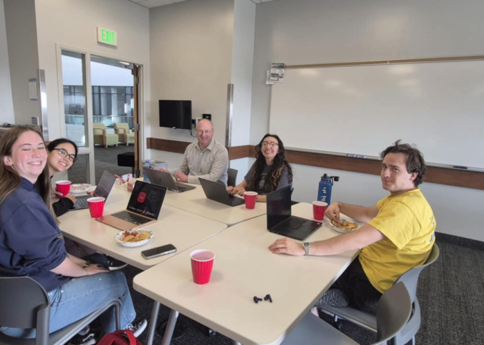
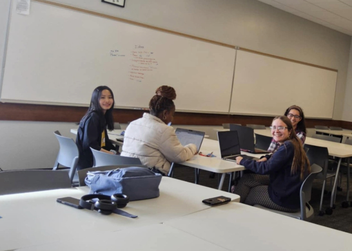
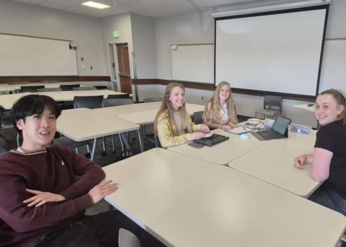

Spring 2025 Leadership
Secretary
Thu Dong

Social Media
Romina Urena
President
Savannah Harvey
Outreach
Emi Dahl
Treasurer
Jackie Ventura

Board Member
Tyra Tambatamba
SWE Spring 2025's Project Teams

Fitbit
This project focused on building a wearable device that collects and transmits health data using embedded systems and wireless communication.

SWE Website
The SWE Website project aimed to create a dynamic and responsive site to represent the society online.

3D Plant Pot
In this project, students designed a smart plant pot that monitors environmental conditions using Arduino and sensors.